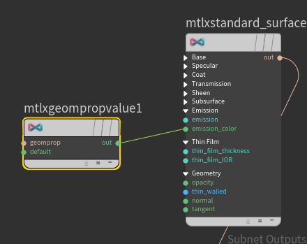
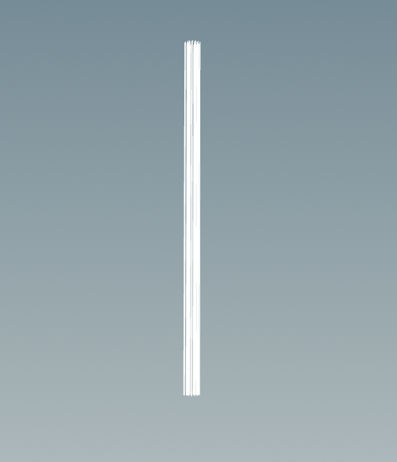
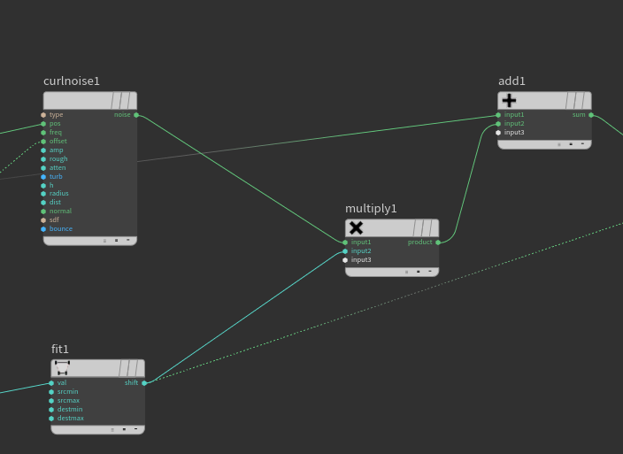
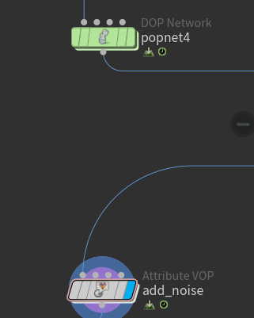
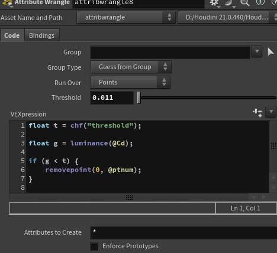

第 4 周
团队成员
Yiqi Zheng（特效）
Riley Ho（特效）
Itim Kongsakulvatanasook（特效）
Sofia Mancias（合成）
1 月 31 日
Benji Hopkins（外观开发）
SCAD × HARBOR × ETC － 第 4 周
大家好，这是我 SCAD × Harbor × ETC 部落格的第四周！
以下是周二简报后导师们的回馈。
Kyle：
-
镜头 1：
-
偏暗的打光方向效果很好。
-
需要在外观开发上多花点时间。
-
自发光应该更多来自环境，而不是物体本身。
-
-
镜头 4：
- 持续调整灯光，让镜头像参考图一样有更强的纵深感。
Beck：
-
镜头 3 和 5：
-
镜头 3 的粒子不够清楚。
-
转到镜头 5 的过渡要更有意图，清楚地从干燥过渡到流体。
-
-
镜头 6：
-
可以考虑增加更多飞舞的元素，让画面更有看头。
-
待办事项：
-
调整粒子的路径与流动形状（加入 noise）
-
优化粒子的材质
经过小组讨论，我们决定在六种颜色旋绕在一起时，从流体改成粒子，以获得更好的效果与更强的视觉美感。以下是我会使用的参考。


我总共尝试了三种方法来实现，其中一种是照著教学做的。
第一种方法是 Dopnet + POPCurveForce，至少对我来说效果最好。

根据前几周的成果，我找到一种更程序化的方式来定义发射器并连接两条曲线。我先做了一条螺旋线，再画第二条曲线作为从画面外进来的引导线。之前的方法是用 Fuse 节点连接两条曲线，但每次调整螺旋参数（例如圈数或高度），我都得手动移动引导线，让 Fuse 能找到最近的点，既没效率又麻烦。
现在的设定改用 Add 节点，能自动连接曲线，不需要手动调整位置。


另一个问题如前面提到的：每次修改螺旋参数或移动手绘曲线时，我也得手动移动发射器，让它保持在曲线起点。为了解决这点，我现在用 curveu 属性找到曲线的起点（point 0），选取该点，再用 Copy to Points 产生发射器。这样不论曲线怎么修改或移动，发射器都会自动跟著曲线走。


这是我在 DOP Net 中的设定。
我也尝试用速度属性同时控制亮度与拖尾长度，速度越快，拖尾越亮越长。（目前还没成功）


材质方面，我读取 SOP 层的 Cd 属性、开启透射，并用几何体上不同的灰阶值控制不透明度。
第二种方法是用 POP Net 和 POP Wrangle（来自 Fowler 教授），让粒子沿著曲线移动：用 pcopen 取样每个粒子周围的相邻点，用 pcfilter 平均曲线的切线，再把粒子速度设为沿著正规化后的切线方向（乘上速度参数）。不过我还不确定接下来要怎么加入可控制的 noise，包括流体内部和边缘。这是我得到的结果。

第三种方法，我找到两个教学：一个用 Path Deform 让垂直线沿著引导曲线变形，另一个著重在表面上制造 noise 或扰动。我把这两种做法结合起来，这是得到的结果。（我不太喜欢这里做出的形状）这个方法的好处是可以套用到任何曲线上。


我尝试用原始点位置计算以距离为基础的遮罩，让扰动依照遮罩来套用。
我先建立几条垂直线，再用一个方块定义区域、把里面的几何体编成群组并删除。这里用 attributevop 来扰动线条。（我请 ChatGPT 协助建立基本逻辑与结构。）

这个设定用 curl noise 来偏移点的位置。
P_new = P + (noise * mask)
下一步是产生遮罩，有选择地停用某些段落。
接著，我用 POP network 产生粒子并加上 noise。


我请 ChatGPT 帮我理解并撰写一个 wrangle，透过参数控制粒子的停用。
接著用 Path Deform 让几何体沿著曲线走，并用关键影格确保动画对齐。


这里我用 Split 节点分离不同层，让流动有更多变化。我觉得这个方法可以和第一种方法整合，产生更多变体。

所以我决定采用第一种方法，并尝试用其他教学学到的技巧做出更多变体。
-
调整路径（为粒子增加变体）
-
改善粒子的材质